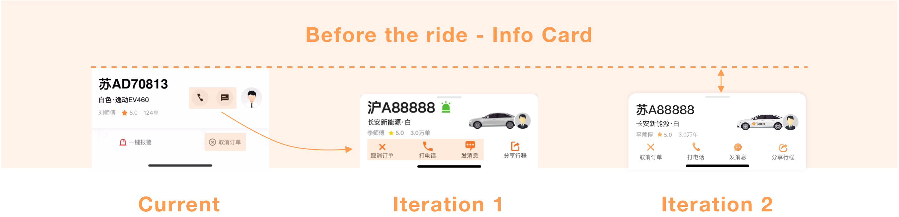

Start Crafting
Moving into the design phase of the project, each team member went away to individually conceptualize and sketch some ideas for solutions to the problems raised throughout the research phase. As a team, we then discussed each other’s proposals, identifying the promising qualities that could be taken forward from each design. After collaborating to sketch out a solution based on the qualities identified, we then created a wireframe.

Design alternatives
Through the design process, I had lots of opportunities to get feedback not only from the design team but also from the PMs. Iteration after iteration was made to distill our MVP down to a very lightweight, bare-minimum version.
I categorized all types of information into 3 sections to ensure the highthighest safety and security standards: before the ride, during the ride, and after the ride. Here are some representative screens from each section that have either been discarded or planned for a later release.

In this one, I highlighted plate number, vehicle model and color as they were the most vital content that passengers would use for recognizing the car and driver. Also, by putting the most frequently used 3 features on the bottom, contact driver, cancel ride, and share trip, I make the info card clearer and shorter.
Meanwhile, Card-based design can gather various pieces of information to form one coherent piece of content and it’s intuitive for users to understand.

Come back to the goal that we wanted to gain riders trust and ensure the safety of passengers, the way we were showing the ride card was inefficient. By structuring the sections in a vertical stack, the most wanted information (arrival time and destination) was placed on the top of the ride card. To help riders easily control their trips, these 3 features - call police, share trip and change destination were moved to the top as well.

The previous design divided rating to 3 sections - driver, app, and vehicle. Users felt this required too much effort. Instead, we utilized general rating and existing tags (compliments or complaints) as a default mechanism to help users provide their feedback. With only 3-4 clicks, we maximized output.
We understand that sometimes the drivers make riders feel unsafe or annoyed, so we provide an opportunity for riders to blacklist these drivers. Next time, the system will avoid assigning this driver to you